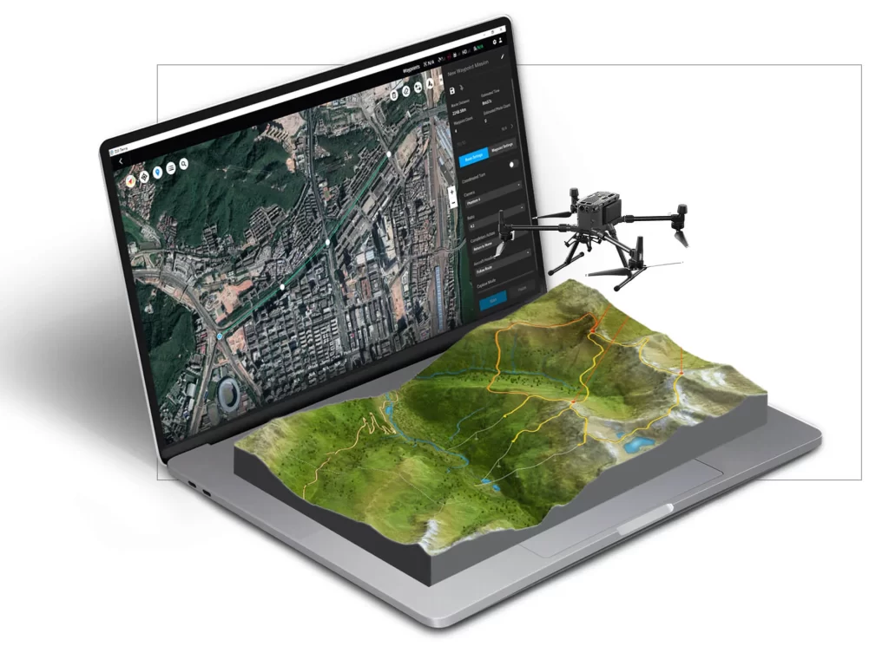
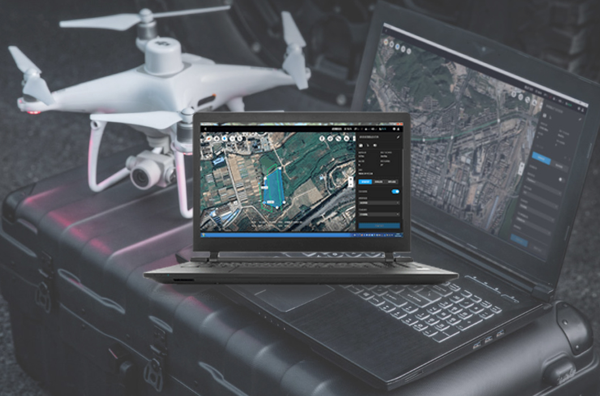

Monitoreo Básico
Ideal para áreas pequeñas, con cobertura de cámaras y control remoto básico.
- Vigilancia en tiempo real
- Conexión remota por app móvil
- Hasta 3 cámaras simultáneas

Monitoreo Avanzado
Monitoreo de alta precisión con análisis de datos y reconocimiento de actividad sospechosa.
- Detección de movimiento avanzada
- Notificaciones de actividad sospechosa
- Hasta 10 cámaras con IA integrada

Monitoreo Corporativo
Ideal para empresas, con monitoreo 24/7 y reportes de seguridad periódicos.
- Personal de seguridad dedicado
- Reportes detallados de actividad
- Monitoreo en múltiples locaciones